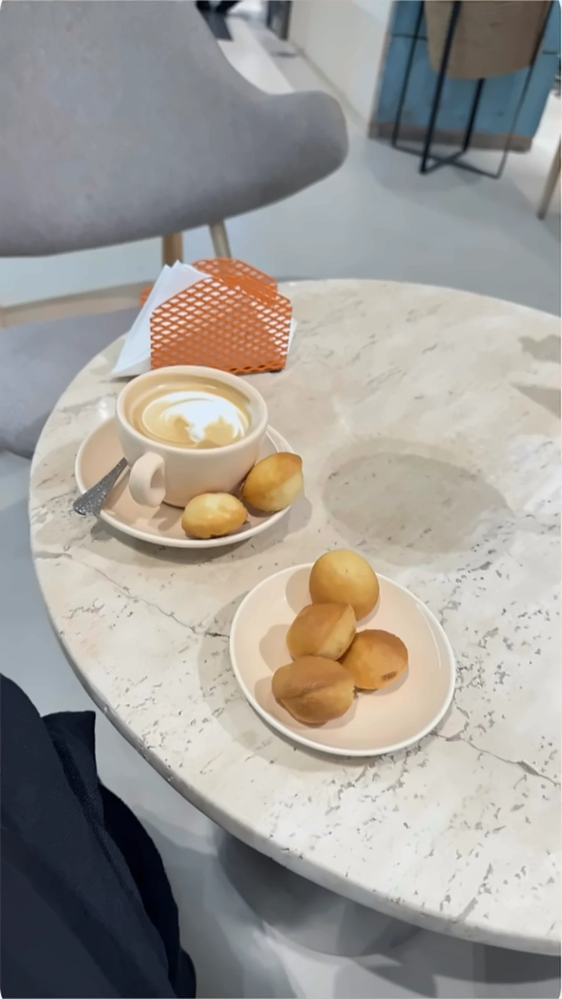
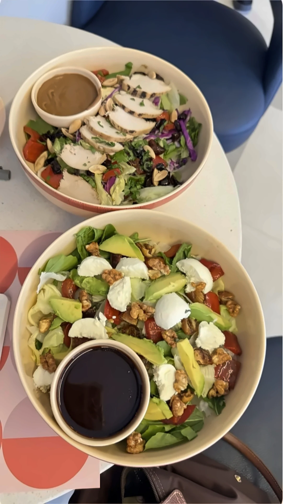
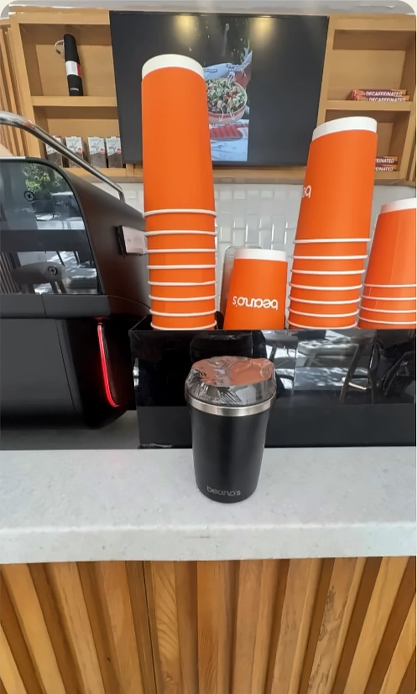
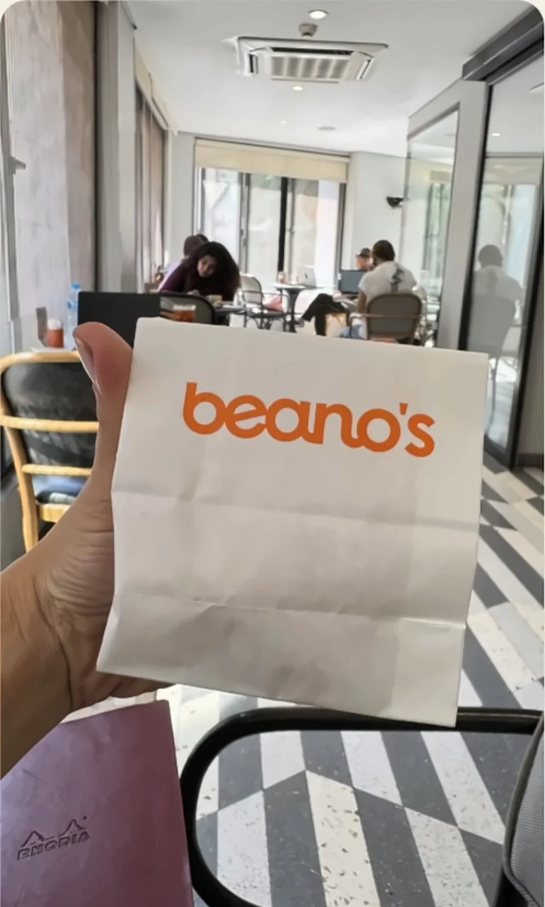
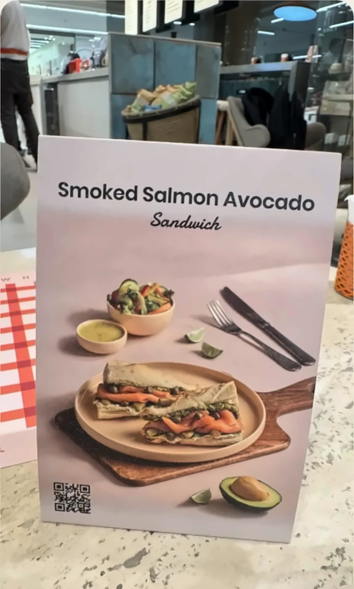
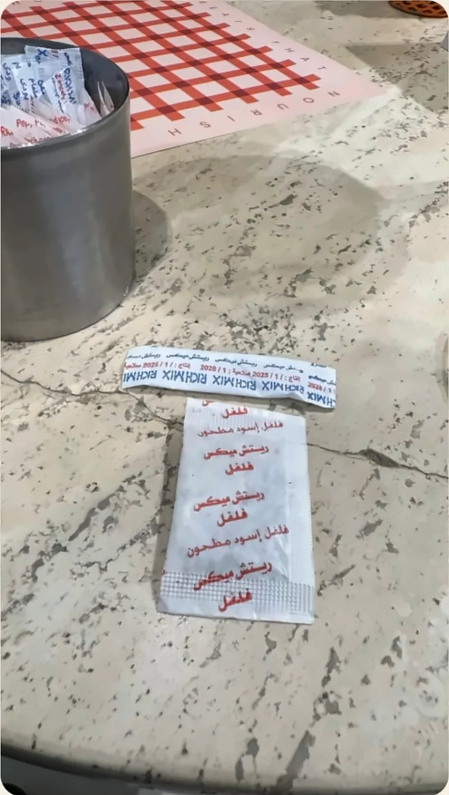
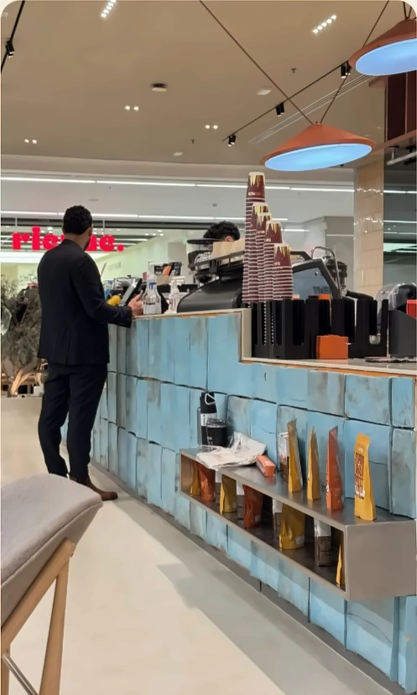
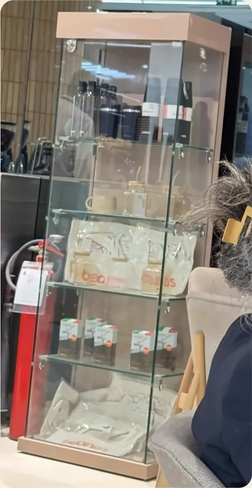

Five branches, five experiences.
Six visits to five branches, 3 to 9 November 2026, by Alaa Elattar. Tap a branch for its scorecard, or compare them all.





Compare all branches
Pick a measure and see the five branches side by side.
Method: six visits to five of the network's branches by one visitor, single snapshots. Indicative, to be confirmed by the full audit across all branches. Branch-level notes are about what we saw, not about people.
Same brand, different experiences
Best-run and most diverse: Zamalek · Best food: Makram Ebeid · Most visible: District 5's terrace · Missing everywhere: loyalty; one coffee standard. What repeats across branches is a chain issue, not a branch issue.
What guests actually touch






Brown = on brand · orange = needs work. Photos from field visits, 3 to 9 Nov 2026. Draft photos: Alaa's originals will replace these crops.